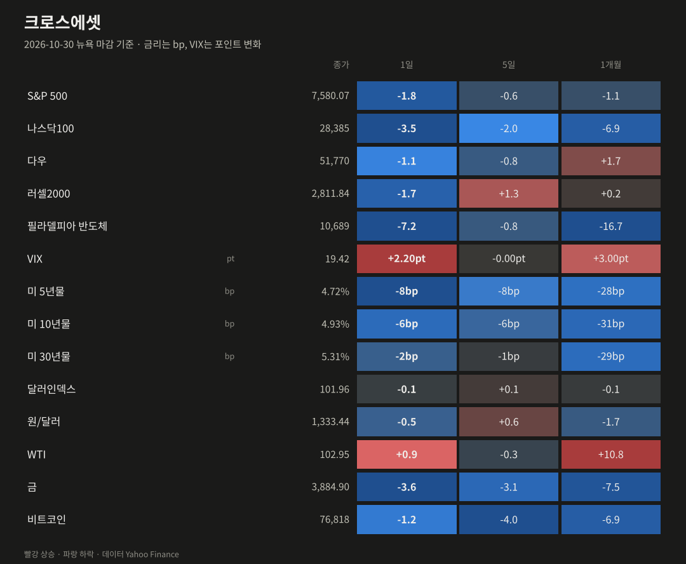
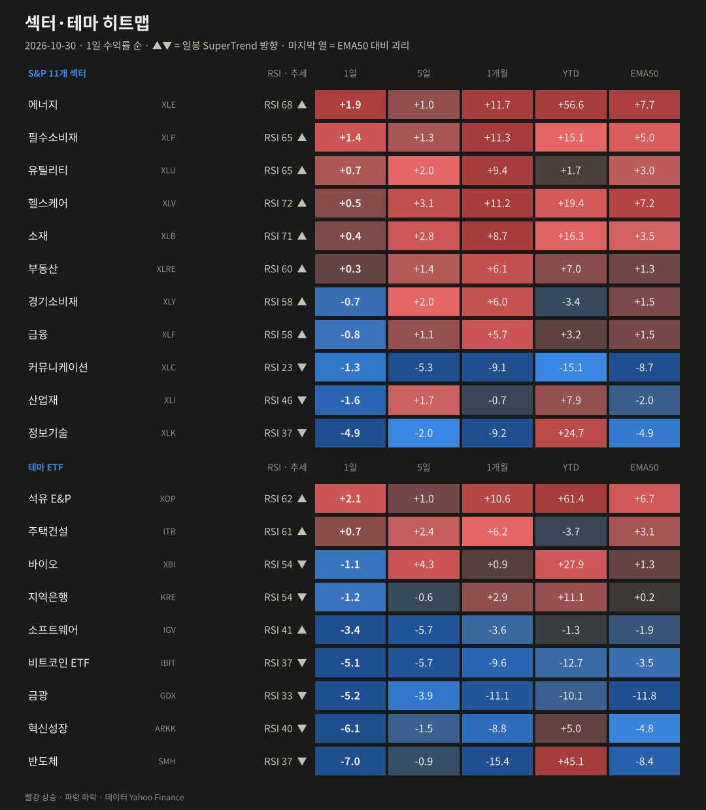
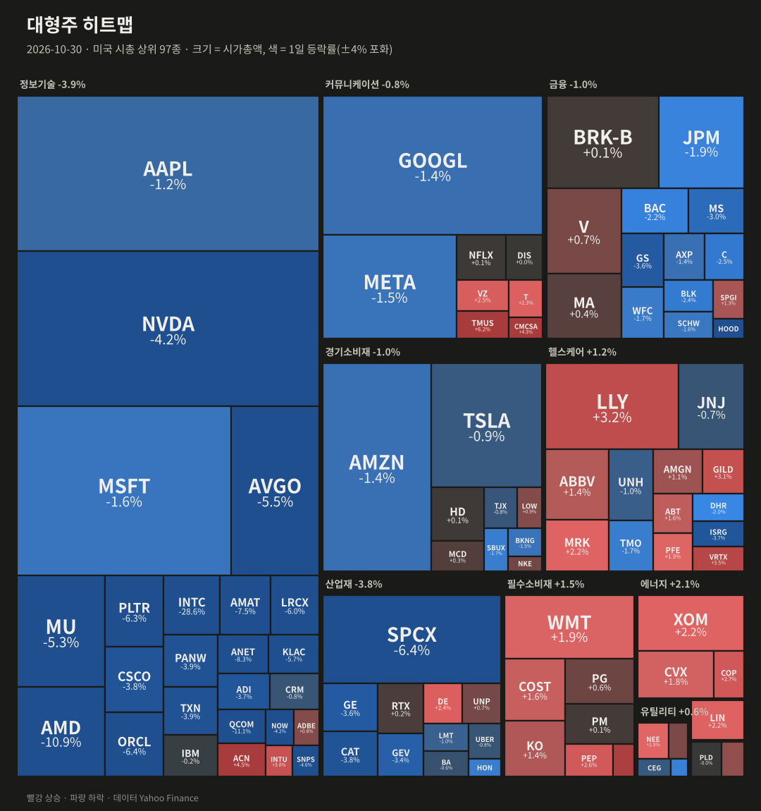
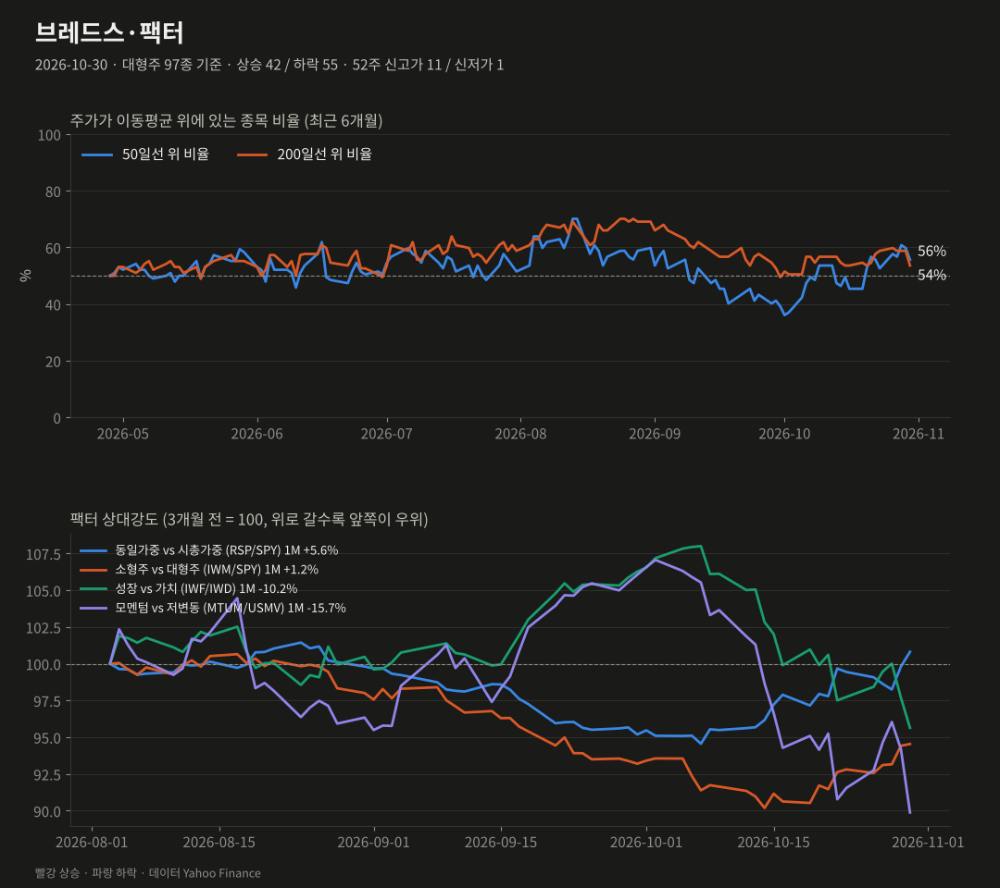
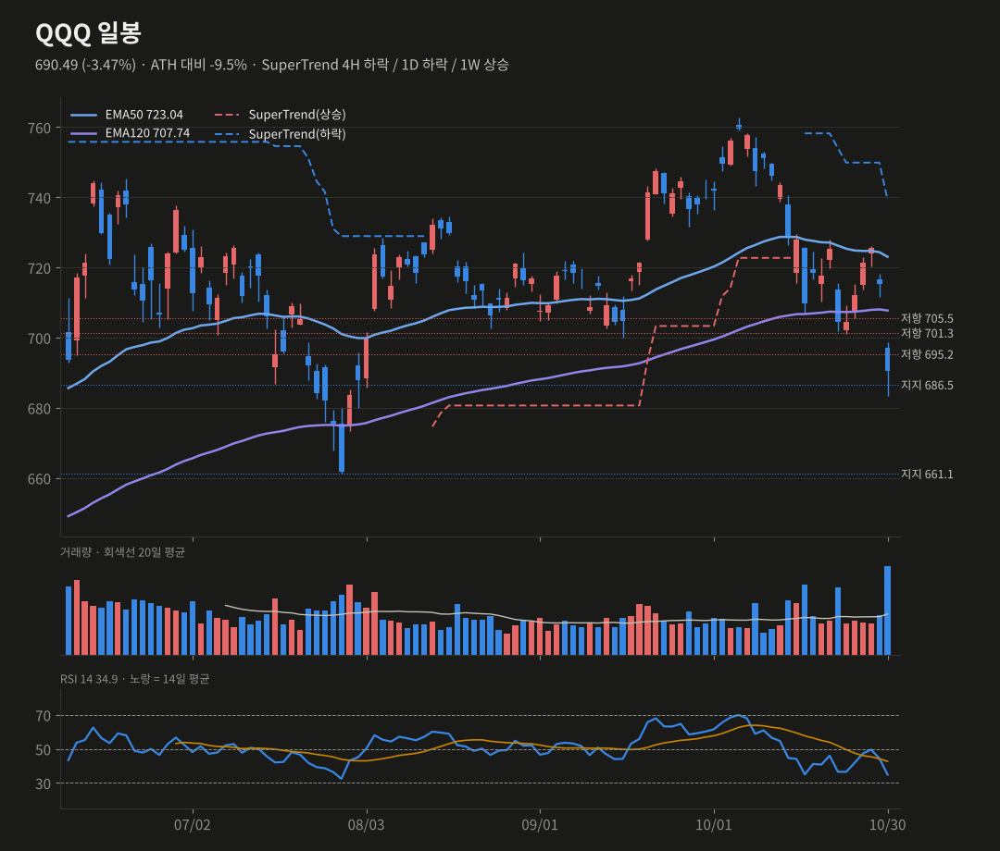
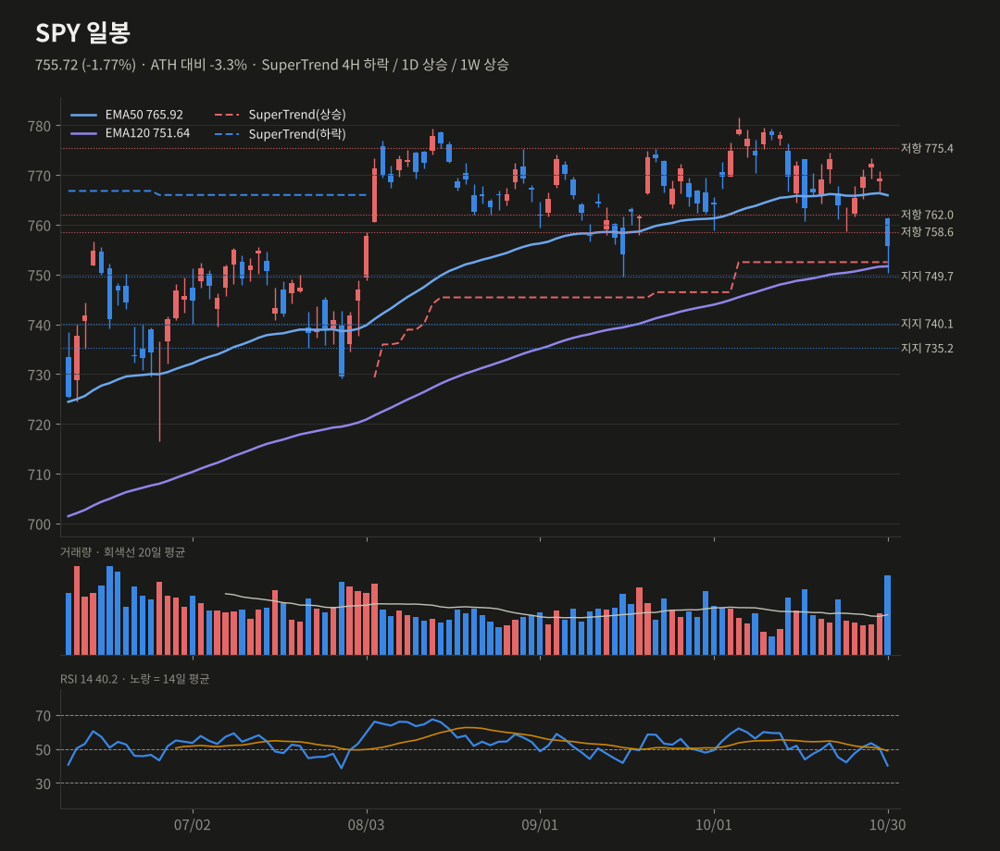
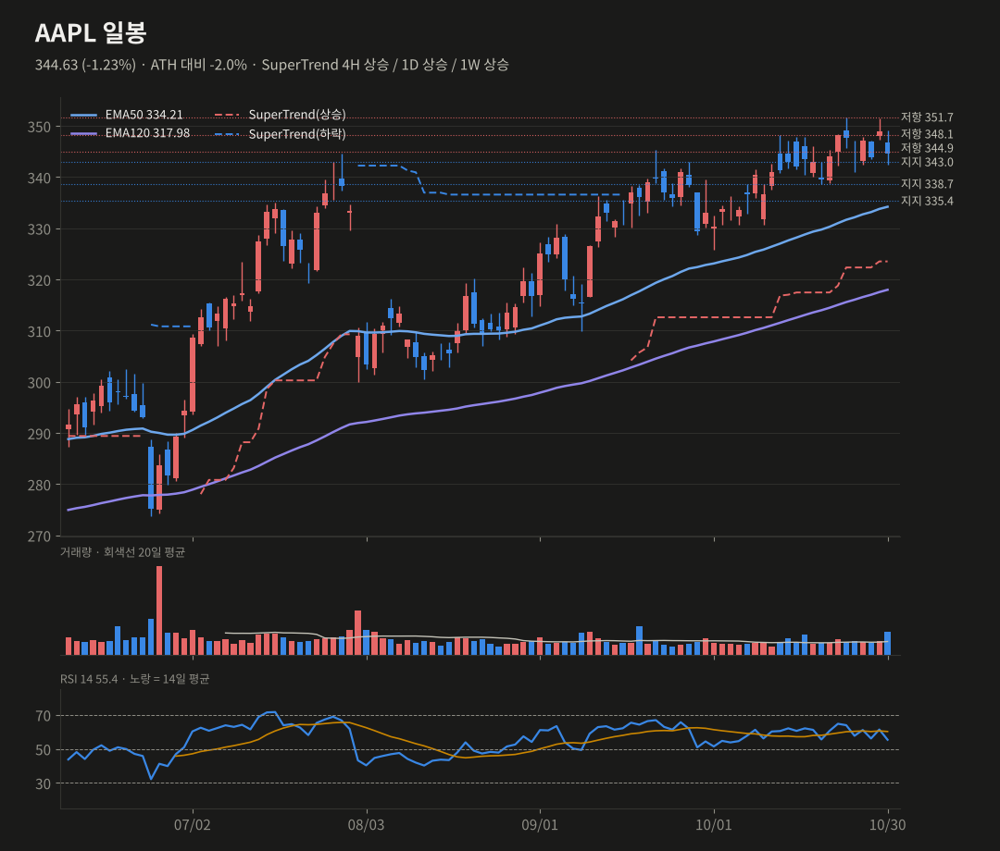

미증시 마감 브리핑
10/30(금) 뉴욕 마감 기준 · 생성 2026-10-31 07:40 KST
인텔 −28.6%가 반도체 투매를 불렀어요. SOX −7.2%, 나스닥100 −3.5%로 QQQ가 일봉 EMA120까지 깨면서 10월을 마감했어요.
S&P 5007,580.07-1.82%
나스닥10028,385-3.46%
다우51,770-1.09%
러셀20002,811.84-1.66%
반도체(SOX)10,689-7.20%
VIX19.42+2.20pt
미 10년물4.93%-6.00bp
원/달러1,333.44-0.51%
요약
- 지수: 나스닥100 −3.5%, S&P −1.8%, SOX −7.2%로 인텔 쇼크(−28.6%)가 반도체 전반을 끌어내렸어요.
- 로테이션: 기술 −4.9%인 반면 에너지 +1.9%, 필수소비재 +1.4%였어요. 동일가중이 시총가중보다 1.0%p 선방했어요.
- 리스크: 바이낸스 약 63억 달러 보안사고로 비트코인은 7.7만 달러, VIX는 19.4로 올랐어요.
- 기술적: QQQ는 EMA120 이탈(스윙 35%)로 686.5 지지가 관건이고, SPY는 750 부근 일봉 추세선, AAPL은 11/2 실적이에요.
종합 판단
하이퍼스케일러의 현금흐름 우려가 인텔 쇼크를 만나 반도체 전반으로 번졌어요. 나스닥100은 10월에만 큰 폭으로 빠지며 월간 하락 마감했어요. 반면 에너지, 필수소비재, 헬스케어는 1개월 +11%로 극단적인 로테이션이 진행 중이에요. QQQ의 EMA120 이탈은 스윙 관점에서 의미가 큰 신호라 스윙 확률을 낮췄어요. 다만 과매도 구간이어서 단기 반등은 열어두고, 다음 주 애플 실적과 중간선거가 변동성의 분기점이에요.
하이퍼스케일러의 현금흐름 우려가 인텔 쇼크를 만나 반도체 전반으로 번졌어요. 나스닥100은 10월에만 큰 폭으로 빠지며 월간 하락 마감했어요. 반면 에너지, 필수소비재, 헬스케어는 1개월 +11%로 극단적인 로테이션이 진행 중이에요. QQQ의 EMA120 이탈은 스윙 관점에서 의미가 큰 신호라 스윙 확률을 낮췄어요. 다만 과매도 구간이어서 단기 반등은 열어두고, 다음 주 애플 실적과 중간선거가 변동성의 분기점이에요.
무엇이 시장을 움직였나
- 인텔 −28.6%(거래량 4.6배)는 1974년 이후 최악의 하루예요. 4분기 매출 가이던스 150~160억 달러가 예상 171억 달러를 밑돌았어요. 조정 총이익률도 44.1%에서 38.0%로 떨어질 전망이고, PC 부진이 내년 상반기까지 간다는 언급까지 나왔어요.
- 반도체 동반 급락: AMD −10.9%, QCOM −11.1%, ANET −8.3%, AMAT −7.5%, AVGO −5.5%, MU −5.3%, NVDA −4.2%였어요. 전날 아마존의 현금흐름 적자에서 시작된 'AI capex 부담' 우려가 반도체 전체로 번졌어요.
- 바이낸스 보안사고: 영향 규모가 약 63억 달러이고, 약 30억 달러를 동결했으며 손실은 전액 보전하겠다고 밝혔어요. 출금은 48시간 안에 재개될 예정이에요. 이 여파로 비트코인 ETF −5.1%, HOOD −7.2%가 빠졌고, 비트코인은 7.7만 달러로 내려갔어요.
- 레딧은 4분기 매출 가이던스가 약해 약 −29%였어요. 혁신성장(ARKK)도 −6.1%였어요. 3분기 고용비용지수는 +0.8%였어요.
- 10년물은 6bp 내려 4.93%, VIX는 19.4(+2.2pt)예요. 금은 −3.6%로 3,885달러까지 밀렸어요. 모멘텀 팩터는 하루 −4.6%p, 1개월 −15.7%p로 급격히 꺾였어요.

| 자산 | 종가 | 1일 | 5일 | 1개월 |
|---|---|---|---|---|
| S&P 500 | 7580.07 | -1.82% | -0.57% | -1.13% |
| 나스닥100 | 28384.85 | -3.46% | -1.98% | -6.94% |
| 다우 | 51770.31 | -1.09% | -0.85% | +1.66% |
| 러셀2000 | 2811.84 | -1.66% | +1.29% | +0.19% |
| 필라델피아 반도체 | 10688.8 | -7.20% | -0.84% | -16.68% |
| VIX | 19.42 | +2.20pt | -0.00pt | +3.00pt |
| 미 5년물 | 4.721 | -8.0bp | -8.4bp | -28.4bp |
| 미 10년물 | 4.929 | -6.0bp | -5.9bp | -30.8bp |
| 미 30년물 | 5.309 | -2.0bp | -0.6bp | -29.4bp |
| 달러인덱스 | 101.96 | -0.07% | +0.15% | -0.13% |
| 원/달러 | 1333.44 | -0.51% | +0.56% | -1.72% |
| WTI | 102.95 | +0.93% | -0.31% | +10.85% |
| 금 | 3884.9 | -3.63% | -3.07% | -7.55% |
| 비트코인 | 76817.84 | -1.23% | -4.01% | -6.94% |

| 섹터·테마 | 1일 | 5일 | 1개월 | YTD | RSI | 일봉 추세 |
|---|---|---|---|---|---|---|
| 석유 E&P XOP | +2.13% | +1.03% | +10.56% | +61.4% | 62 | 상승 |
| 에너지 XLE | +1.91% | +1.00% | +11.67% | +56.6% | 68 | 상승 |
| 필수소비재 XLP | +1.41% | +1.31% | +11.32% | +15.1% | 65 | 상승 |
| 주택건설 ITB | +0.69% | +2.40% | +6.15% | -3.7% | 61 | 상승 |
| 유틸리티 XLU | +0.67% | +2.04% | +9.45% | +1.7% | 65 | 상승 |
| 헬스케어 XLV | +0.45% | +3.12% | +11.23% | +19.4% | 72 | 상승 |
| 소재 XLB | +0.40% | +2.79% | +8.65% | +16.3% | 71 | 상승 |
| 부동산 XLRE | +0.26% | +1.41% | +6.12% | +7.0% | 60 | 상승 |
| 경기소비재 XLY | -0.71% | +2.02% | +6.04% | -3.4% | 58 | 상승 |
| 금융 XLF | -0.76% | +1.09% | +5.71% | +3.2% | 58 | 상승 |
| 바이오 XBI | -1.15% | +4.31% | +0.95% | +27.9% | 54 | 하락 |
| 지역은행 KRE | -1.17% | -0.62% | +2.94% | +11.1% | 54 | 하락 |
| 커뮤니케이션 XLC | -1.29% | -5.32% | -9.13% | -15.1% | 23 | 하락 |
| 산업재 XLI | -1.60% | +1.69% | -0.74% | +7.9% | 46 | 하락 |
| 소프트웨어 IGV | -3.41% | -5.70% | -3.64% | -1.3% | 41 | 상승 |
| 정보기술 XLK | -4.89% | -2.03% | -9.25% | +24.7% | 37 | 하락 |
| 비트코인 ETF IBIT | -5.14% | -5.66% | -9.59% | -12.7% | 37 | 하락 |
| 금광 GDX | -5.21% | -3.88% | -11.13% | -10.1% | 33 | 하락 |
| 혁신성장 ARKK | -6.07% | -1.51% | -8.84% | +5.0% | 40 | 하락 |
| 반도체 SMH | -6.98% | -0.89% | -15.43% | +45.1% | 37 | 하락 |

| 상승 상위 | 1일 | 거래량(20일 대비) | 하락 상위 | 1일 | 거래량 |
|---|---|---|---|---|---|
| TMUS | +6.21% | x1.7 | INTC | -28.58% | x4.58 |
| ACN | +4.46% | x1.52 | QCOM | -11.12% | x2.44 |
| CMCSA | +4.27% | x1.56 | AMD | -10.88% | x2.03 |
| MDLZ | +3.85% | x2.04 | ANET | -8.34% | x1.44 |
| VRTX | +3.50% | x2.23 | AMAT | -7.49% | x1.47 |
| LLY | +3.19% | x2.12 | HOOD | -7.21% | x1.41 |

대형주 97종: 상승 42 / 하락 55 · 50일선 위 55.7% (전일 59.8%, 5일 전 52.6%) · 200일선 위 53.6% · 52주 신고가 11 / 신저가 1
오른 종목 42, 내린 종목 55였어요. 동일가중(RSP −0.79%)이 시총가중(SPY −1.77%)보다 1.0%p 덜 빠졌어요. 기술주에 집중된 매도였고, 에너지·필수소비재·헬스케어는 올랐어요. SMA50 위 종목 비율은 59.8%에서 55.7%로 내려왔어요.
| 팩터 스프레드 | 1일 | 5일 | 1개월 |
|---|---|---|---|
| 동일가중 vs 시총가중 (RSP/SPY) | +1.00% | +1.38% | +5.60% |
| 소형주 vs 대형주 (IWM/SPY) | +0.13% | +1.87% | +1.21% |
| 성장 vs 가치 (IWF/IWD) | -2.10% | -2.14% | -10.22% |
| 모멘텀 vs 저변동 (MTUM/USMV) | -4.59% | -1.83% | -15.67% |
기술적 분석 · 확률
TradingView 설정과 맞춘 지표(EMA50·EMA120, SuperTrend ATR20×4, RSI14, MACD 12/26/9). 확률은 차트 기반 추정치예요.
QQQ 690.49 -3.47%
SuperTrend 4H 하락 / 1D 하락 / 1W 상승 · RSI 34.88
단기 반등 45% · 스윙 상승 35% (-5)
일봉 EMA120(707.7)을 종가로 이탈해 중기 추세가 꺾이는 레짐 신호가 나왔어요. 주봉 RSI도 50 아래로 내려갔어요. 대신 일봉 RSI 34.9, 4H RSI 31.8로 과매도 근처이고 686.5 지지가 바로 아래라 단기 반등 여지는 있어요.
상방 701.3 회복 → 707.7(EMA120) 재탈환 시 이탈 무효
하방 686.5 이탈 → 661.1, 649.6(주봉 SuperTrend)
SuperTrend 4H 하락 / 1D 하락 / 1W 상승 · RSI 34.88
단기 반등 45% · 스윙 상승 35% (-5)
일봉 EMA120(707.7)을 종가로 이탈해 중기 추세가 꺾이는 레짐 신호가 나왔어요. 주봉 RSI도 50 아래로 내려갔어요. 대신 일봉 RSI 34.9, 4H RSI 31.8로 과매도 근처이고 686.5 지지가 바로 아래라 단기 반등 여지는 있어요.
상방 701.3 회복 → 707.7(EMA120) 재탈환 시 이탈 무효
하방 686.5 이탈 → 661.1, 649.6(주봉 SuperTrend)
SPY 755.72 -1.77%
SuperTrend 4H 하락 / 1D 상승 / 1W 상승 · RSI 40.2
단기 반등 45% (-5) · 스윙 상승 45% (-5)
일봉 EMA50을 이탈했고 MACD선도 0선 아래로 내려갔어요. 일봉 SuperTrend 상승선(752.5)과 EMA120(751.6), 지지 749.7이 겹친 750 부근이 추세를 지키는 마지노선이에요.
상방 758.6 회복 → 765.9(EMA50)
하방 749.7 이탈 → 일봉 추세 하락 전환, 740.2, 729.7
SuperTrend 4H 하락 / 1D 상승 / 1W 상승 · RSI 40.2
단기 반등 45% (-5) · 스윙 상승 45% (-5)
일봉 EMA50을 이탈했고 MACD선도 0선 아래로 내려갔어요. 일봉 SuperTrend 상승선(752.5)과 EMA120(751.6), 지지 749.7이 겹친 750 부근이 추세를 지키는 마지노선이에요.
상방 758.6 회복 → 765.9(EMA50)
하방 749.7 이탈 → 일봉 추세 하락 전환, 740.2, 729.7
AAPL 344.63 -1.23%
SuperTrend 4H 상승 / 1D 상승 / 1W 상승 · RSI 55.35
단기 상승 50% (-5) · 스윙 상승 55%
반도체 투매 속에서도 −1.2%로 상대 강세였어요. 344.9 바로 아래에서 11/2 실적을 맞아요. 4H MACD는 데드크로스지만 주봉 추세는 견고해요(RSI 65).
상방 344.9 회복 → 348.2, 351.7(ATH)
하방 343.0 이탈 → 338.7, 335.4
SuperTrend 4H 상승 / 1D 상승 / 1W 상승 · RSI 55.35
단기 상승 50% (-5) · 스윙 상승 55%
반도체 투매 속에서도 −1.2%로 상대 강세였어요. 344.9 바로 아래에서 11/2 실적을 맞아요. 4H MACD는 데드크로스지만 주봉 추세는 견고해요(RSI 65).
상방 344.9 회복 → 348.2, 351.7(ATH)
하방 343.0 이탈 → 338.7, 335.4



일정
- 11/1 미국 서머타임 종료(마감 06:00 KST)
- 11/2 장후 애플 실적
- 11/3 미국 중간선거
- 바이낸스 출금 재개 여부(48시간 이내 예정)
- 12월 FOMC 인상 여부
출처
- Stock Market Today (Oct. 30, 2026): Intel, Reddit are latest tech earnings casualties (TheStreet)
- Stock Market Today Live October 30, 2026: Intel Has Its Worst Day in Decades (StockTitan)
- Intel shares plunge 28.6% as U.S. stocks suffer broad selloff (AP via Star-Advertiser)
- Apple to Report Q4 2026 Earnings on November 2 (MacRumors)
데이터 Yahoo Finance·Nasdaq. 색은 한국식(빨강 상승·파랑 하락). 투자 판단의 참고 자료예요. 지난 브리핑